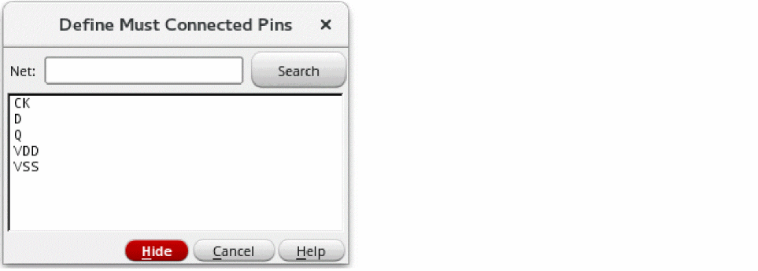

Defining Must-Connect Pins
To define a set of pins on a net to be connected externally:
-
In the layout window, choose Connectivity – Pins – Must Connect.
The window prompts you to click a pin figure to select a net. -
To select the net that includes the pins you want to connect externally, click a shape on that net.
You can select a net by selecting a shape in the layout before you choose the Must Connect command.
Flight lines appear, connecting only the pins of the net you choose. The flight lines are drawn between pins that still need to be internally (strongly) connected. If incomplete nets are being displayed, the other net flight lines disappear. Flight lines are visible in Layout XL and higher tiers.
Selecting a net does not make a connection change.
The window prompts you to select one or more pins to be connected externally. -
To select the pins you want to connect externally, click one or more pins on the selected net.
You can click a pin,shift-click subsequent pins, or select pins by area selection by clicking and dragging with the right mouse button.
Clicking the pins of the selected net makes the connection change.- If you select a single pin, all other pins on the net are deselected and that pin is connected externally to all other pins on the net.
- If you select multiple pins, those pins are connected strongly (internally) as a set and are connected as must connects (externally) to all other pins on the net.
When you define the connection of each pin, the flight line display of the net immediately changes to show the connection.
You can also use the Define Must Connected Pins form to select nets. -
Press
F3to open the Define Must Connected Pins form, while the Must Connect command is active.
 -
Type the name of a net in the Net field or click the net names in the list box of the form to select them.
To select more than one net at a time to work on, you can:- Choose multiple nets in the form.
- Use drag by area when the command line prompts you to select a net.
You must define external pin connectivity within a net. You cannot define external pin connectivity between nets. -
When you are finished, press
Escto end the command.
When you define pins as must-connects, the router routes them at the next level of the hierarchy.
You can change from the Must Connect command to the Strongly Connected command, to the Weakly Connected command, to the Pseudo Parallel Connect command with the right mouse button. Must Connect pins must be changed to Strongly Connected before being changed to Weakly Connected.
Related Topics
Define Net/Pin Connections Form
Return to top